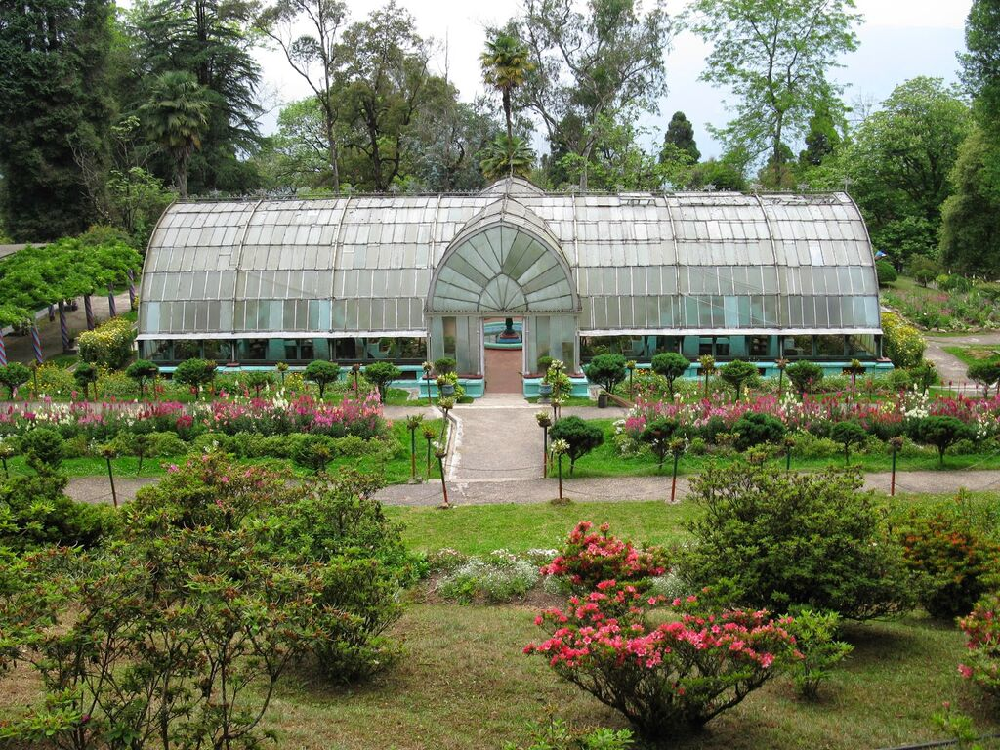

Lloyd's Botanical Garden was established in 1878 when 40 acres (160,000 m2) of land was acquired at Darjeeling to form a botanic garden as a distant annexe of the Calcutta Botanical Garden. The land was provided by William Lloyd, in whose name the botanical garden has been named.
The Garden is situated just below the Eden Sanatorium in an open slope covering an area of about 16 hectares (40 acres), bound by Cart Road and Victoria Road on the North, by Jail Road and Hari Ghose Road on the south, by Eden sanatorium on the east and Victoria Road on the west. This Garden is one of the main attractions to the visitors to Darjeeling with a treasury of many rare and beautiful plants as well as patches of typical forest of tall Cryptomeria, Bucklandia and Alnus with thick mass of lianas and shrubby undergrowth. It is a favorite spot of recreation with vistas across some of the loveliest slopes, a paradise to the students and research workers in Botany and an eminent institution distributing the plants and seeds and specimens of temperate and sub-temperate Himalayas to different parts of the world.
Lloyd’s Botanical Garden is home to a vast collection of indigenous and exotic plants, making it an important center for botanical studies. The garden is divided into several sections, each dedicated to a different type of flora:
The garden houses an extensive collection of orchids, including some rare and endangered species. The climate of Darjeeling provides an ideal environment for orchids, and the garden's orchid house is one of the major attractions.


Lloyd’s Garden also features a specialized greenhouse for cacti and succulents. The collection includes species from arid regions, offering a contrast to the otherwise humid environment of the Eastern Himalayas.
The garden boasts a large collection of cycads and conifers, some of which are ancient species dating back to prehistoric times. These plants are displayed in sections that mimic their natural habitats.


The high altitude of the garden is ideal for a variety of alpine plants, many of which are native to the Himalayan region. This section attracts botanists interested in mountain flora.

The bamboo collection in the garden is noteworthy, with several species of bamboo thriving in the garden's favorable climate.
The garden is crisscrossed with well-maintained walkways and trails, allowing visitors to explore its various sections at a leisurely pace. The paths wind through beautifully landscaped areas, with benches and gazebos for relaxation.
In addition to the cactus and orchid houses, the garden has several other greenhouses where rare and delicate plants are grown under controlled conditions. These include tropical plants that require a specific environment to thrive.
The collection of tree ferns and rhododendrons is another highlight of Lloyd’s Botanical Garden. Rhododendrons, in particular, are a major attraction during the flowering season in spring.